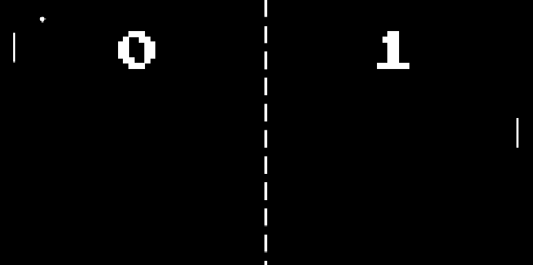

In an effort to experiment with game design and the Unity game engine, I have worked on a clone of the classic Pong. The basic functionality of Pong already works (scoring, movement, serving). But I plan to go further than that and add settings, a menu, 2nd player controls, and an AI.
The sides of the game get cut off in the embedded version, I am still working on that.
